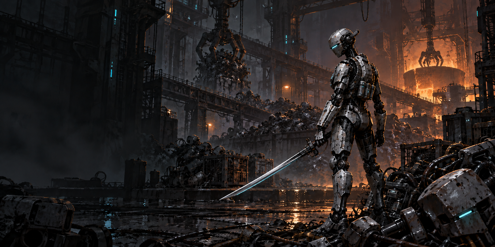

위험한 적이 곧 보상
엘리트와 보스를 쓰러뜨려 그들의 전투 기술이 담긴 파츠를 회수한다.
HUNT / GRAFT / CONNECT
폐기된 안드로이드가 살아남기 위해 기계를 사냥하는 탑다운 액션 로그라이트. 강적의 파츠로 전투 방식을 바꾸고, 모은 RAM 칩을 연결해 자신만의 빌드를 완성한다.
성장 방식 살펴보기사냥은 몸을 바꾸고.
연결은 힘을 키운다.
엘리트와 보스를 쓰러뜨려 그들의 전투 기술이 담긴 파츠를 회수한다.
헤드·팔·다리·코어에 파츠를 장착해 공격, 이동, 스킬과 보조 능력을 얻는다.
RAM 칩은 인벤토리 안에서 기본 효과를 낸다. 전원과 연결된 칩에는 추가 강화가 붙는다.
AI는 더 많은 기억과 연산 공간을 요구한다. 그러나 금과 구리 자원이 고갈되고 생산망이 무너진 세계에서, 정상 작동하는 RAM은 더 이상 쉽게 만들 수 없다.
기계들은 다른 기계를 해체해 RAM과 부품을 빼앗는다. 거대한 시설을 차지한 AI는 사냥꾼을 보내고, 낡은 기체는 다음 회수 대상이 된다.
주인공도 버려진 안드로이드였다. 다시 눈을 떴을 때 자신을 기다리는 것은 구조가 아니라 해체였다. 살아남기 위해, 자신을 쫓던 기계들을 역으로 사냥한다.
헤드·팔·다리·코어는 모두 비어 있는 상태로 시작한다. 기본 몸체만으로 검을 휘두르고 이동·회피할 수 있으며, 사냥에서 얻은 파츠가 그 위에 새로운 능력을 더한다.

탐지, 조준, 표식과 기술 제어.
예시 · 추적 센서: 공격한 적을 표적으로 지정해 추격을 돕는다.검격, 강공격, 무장 기술을 추가하거나 강화.
예시 · 진압 팔: 방패 돌진으로 접근하고 적을 밀쳐낸다.이동, 회피, 추격과 이탈.
예시 · 추진 다리: 회피에 추진 효과를 더해 재진입을 돕는다.스킬 운용, 방어, 회복과 특수 반응.
예시 · 방전 코어: 적이 붕괴할 때 주변으로 방전을 일으킨다.일반 적, 상점, 상자, 레벨업에서는 헤드·팔·다리·코어 파츠가 나오지 않는다. 파츠를 원한다면 해당 기계를 직접 사냥해야 한다.
파츠에는 장착 부위와 능력이 표시된다. 빈 부위에 장착하거나, 같은 부위의 파츠와 교체한다.
같은 팔 파츠라도 방패 돌진, 추가 검격, 원거리 무장처럼 서로 다른 전투 방식을 제공한다.
파츠는 캐릭터 슬롯에 장착한다. RAM 인벤토리의 칸을 차지하지 않으며, 파츠의 능력은 전원 연결 없이 작동한다.
네 부위는 확장 파츠 슬롯이다. 시작 몸체에 해당 신체가 없다는 뜻은 아니다. 액티브 파츠는 사용 기술을 제공하고, 다른 파츠는 기본 행동과 능력을 보강한다.
인벤토리에 배치한 모든 칩은 기본 효과가 활성화된다. 떨어져 있는 칩도 능력을 제공한다.
이동 가능한 전원 칸과 칩을 면으로 맞댄다. 전원은 맞닿은 칩들을 따라 이어지고, 연결된 칩이 강화된다.
모험 중 추가 전원을 얻어 배치한다. 같은 칩 묶음에 새 전원이 연결되면 강화 단계가 더 올라간다.
칩마다 막대·ㄴ자·ㅗ자 등 모양이 다르다. 회전하고 옮기며 서로 맞닿게 배치한다. 색깔이나 종류가 달라도 면으로 닿으면 연결된다.
시작 인벤토리는 넉넉하게 제공한다. 아이템을 얻을 때마다 버릴 것을 고민하기보다, 원하는 칩을 어떻게 이어 강화할지 생각하게 한다.
전원이 하나 연결되면 +1, 서로 다른 전원 둘이 연결되면 +2. 하나의 전원이 여러 방향으로 닿아도 중복 계산하지 않는다.
전원을 옮기거나 연결을 끊으면 단계가 다시 계산된다. 기본 효과는 남고 추가 강화만 사라진다. 대각선 접촉과 빈칸 건너뛰기는 연결로 보지 않는다.
이름 · 모양 · 기본 효과 · 현재 강화 단계 · 강화되는 효과.
회전이나 이동 전에 바뀔 강화 상태를 보여주면 긴 설명 없이 배치를 판단할 수 있다.
RAM 칩은 공격, 이동, 스킬 운용, 생존 능력을 보강한다. 예를 들어 같은 ‘진압 팔’을 장착했더라도 공격 칩에 힘을 모으면 돌파 중심으로, 방어 칩에 힘을 모으면 버티는 전투로 구성할 수 있다. 전원은 인벤토리 강화 장치이며 캐릭터의 코어 파츠와는 별개다.
아래는 연결 원리를 보여주는 조작 예시다. 칩이나 전원을 선택한 뒤 빈칸을 누르면 이동한다. 칩은 회전할 수 있고, 추가 전원도 배치할 수 있다.
전원을 선택한 뒤 빈칸을 누르세요.
격자 크기와 + 표시는 규칙 설명을 위한 예시이며 최종 인벤토리 크기·성능 수치가 아니다.
서로 이어진 칩 묶음에 여러 전원을 연결하면 해당 묶음 전체가 강화된다. 칩 모양을 맞추고 끊긴 부분을 이어 주는 것이 배치의 핵심이다.
떨어진 칩 묶음에도 전원을 배치할 수 있다. 넓은 공간을 활용하며 새 칩을 받아들이고, 정비할 때 묶음을 이어 더 높은 강화를 노린다.
신규 제작한 인게임 콘셉트 이미지. 화면은 전투와 회수 경험을 설명하며 실제 플레이 화면은 아니다.
기본 공격·강공격·회피로 적을 상대한다. 흡수한 능력은 접근, 연계, 방어와 마무리의 선택을 늘린다.
공격으로 충격을 누적해 붕괴를 유도한다. 파츠와 칩은 붕괴를 만들거나 활용하는 방법을 바꾼다.
파츠로 쓸 기술과 행동을 정하고, RAM 칩의 종류와 전원 배치로 그 전투 방식을 보강한다.
| 조작 | 행동 |
|---|---|
| WASD / 마우스 | 이동 / 방향 조준 |
| 좌클릭 / Shift + 좌클릭 | 기본 공격 / 강공격 |
| Space | 누르면 회피. 유지하면 회피 이후 달리기. 새 회피는 키를 떼고 다시 누른다. |
| 우클릭 · Q · E | 장착 파츠가 제공하는 액티브 기술 배정안. 행동 강화형 파츠는 별도 입력 없이 적용. |
| F / Tab | 상호작용 / 장비·RAM 관리 |
세피리아와 공유하는 재미는 아이템을 모으고 인벤토리를 배치하는 것이다. RAM HUNTER는 여기에 강적 전용 파츠와 전원으로 이어지는 강화를 중심으로 독자적인 성장 경험을 만든다.
아티팩트를 수집해 배치하고 다양한 석판으로 강화하는 전략적 인벤토리 구조를 내세운다.
출처 · 세피리아 공식 Steam 소개기술이 담긴 파츠를 얻으려면 강적을 사냥해야 한다. 칩은 넣으면 작동하고, 전원과 이어진 묶음은 추가 강화된다.
‘좋은 아이템이 나오길 기다린다’에 더해 ‘저 기계의 팔이 필요하다’는 목표가 생긴다.
면 접촉 하나로 연결을 판단한다. 전원의 위치와 칩의 모양이 선택의 중심이다.
파츠는 기술뿐 아니라 외형의 작은 변화로도 사냥의 결과를 보여준다. 같은 안드로이드가 매번 다른 전투 기체로 완성된다.
비교는 공식 소개에 명시된 인벤토리 특징을 기준으로 한다. 세피리아의 다른 성장·전투 시스템이 없다는 의미는 아니다.
네 파츠 슬롯은 비어 있다. 넉넉한 RAM 인벤토리와 이동 가능한 전원으로 사냥을 시작한다.
방을 돌파하며 칩을 얻는다. 우선 빈칸에 넣어 효과를 받고, 정비할 때 회전·이동해 전원과 연결한다.
진압 기체의 팔을 얻으면 돌진이 생긴다. 추적 기체의 다리는 회피와 재진입을 바꾼다.
보상이나 상점에서 얻은 전원을 배치한다. 중요한 칩들을 함께 연결해 강화 단계를 높인다.
보스의 특징을 가진 파츠를 회수한다. 현재 장착과 비교해 빈 슬롯을 채우거나 전투 방향을 바꾼다.
| 보상 | 획득 경로 | 사용하는 곳 |
|---|---|---|
| 헤드·팔·다리·코어 | 엘리트·보스 처치 전용 | 캐릭터 파츠 슬롯 |
| RAM 칩 | 전투·방 보상, 레벨업, 상점 | 인벤토리 격자 |
| 추가 전원 | 진행 보상, 상점 | 인벤토리의 이동 가능한 전원 칸 |
| 스크랩·회복 자원 | 전투와 탐색 | 거래, 정비, 생존 |
한 스테이지의 방들은 문으로 이어진다. 전투 중에는 문이 잠기고, 모든 전투방을 완료하면 다음 스테이지로 진행한다. 일반 스테이지를 거쳐 선택 보스에 도전하고 다음 구역으로 나아간다. 어떤 파츠를 얻고 어떤 칩을 연결했는지가 매번 다른 전투를 만든다.
BUILD YOUR OWN SURVIVAL
처음엔 버려진 안드로이드.
마지막엔, 내가 사냥한 기계들의 집합.